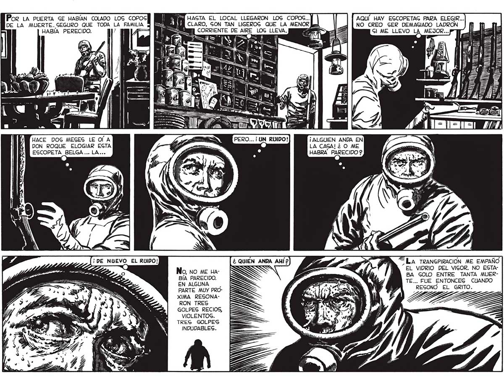

Por LA PUERTA SE HABÍAN COLADO LOG COPOS DE LA MUERTE. SEGURO QUE TODA LA FAMILIA HABÍA PERECIDO. TU [ =O. A HACE DOS MESES LE Ol A DON ROQUE ELOGIAR EGTA ESCOPETA BELGA... LA... al ¡DE NUEVO EL RUIDO! Q Za SS A, CORRIENTE DE AIRE LOGS LLEVA. = Lo Y 3 ll Há 2 J 0 == >= ! UY ¿ QUIEN ANDA AHÍ? No, no ME HaBÍA PARECIDO. EN ALGUNA | PARTE MUY PROXIMA RESONARON TRES GOLPES RECIOS, VIOLENTOS. TRES GOLPES INDUDABLES. HASTA EL LOCAL LLEGARON LOG COPOS... CLARO, GON TAN LIGEROGS QUE LA MENOR AQUÍ HAY EGCOPETAG PARA ELEGIR... NO CREO SER DEMASIADO LADRON MA Y hall A | = Y = 171 ¡ ALGUIEN ANDA EN LA CAGA! ¿ O ME HABRA PARECIDO $ %ILA TRANGPIRACION ME EMPAÑO EL VIDRIO DEL VIGOR. NO ESTABA GOLO ENTRE TANTA MUERTE... FUE ENTONCEG CUANDO REGSONO EL GRITO. 47
